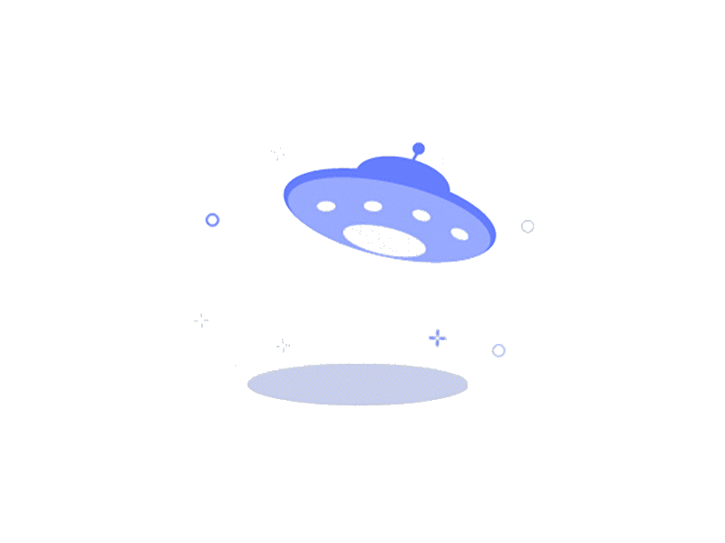

<ion-header [translucent]="true">
  <ion-toolbar>
    <ion-back-button slot="start"></ion-back-button>
    <ion-title>
      SEARCH TODOS
    </ion-title>
  </ion-toolbar>
</ion-header>

<ion-content [fullscreen]="true">
  <ion-header collapse="condense">
    <ion-toolbar>
      <ion-title size="large">Todo App</ion-title>
    </ion-toolbar>
  </ion-header>

  <div id="container">
    <ion-grid fixed>
      <ion-row>
        <ion-col size="12" sizeMd="12" sizeLg="12">
          <div class="search-container">
            <ion-input (ionInput)="searchChange($event)" rounded aria-label="Search Task" placeholder="Search Task"
              class="custom"></ion-input>
          </div>
        </ion-col>
        <ion-col size="12" sizeMd="12" sizeLg="12">
          <div *ngIf="searchTasks().length > 0">
            <app-task-item type="searchtask" *ngFor="let searchTask of searchTasks()" [hideStar]="true"
              [hideMarkAsComplete]="true" [task]="searchTask"></app-task-item>
          </div>
          <div *ngIf="searchTasks().length < 1" class="empty-layout-image-container">
            
          </div>
        </ion-col>
      </ion-row>
    </ion-grid>
    <!-- <strong>Ready to create an app?</strong>
    <p>Start with Ionic <a target="_blank" rel="noopener noreferrer" href="https://ionicframework.com/docs/components">UI Components</a></p> -->
  </div>
</ion-content>